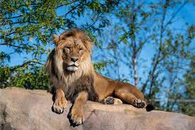
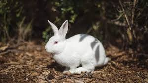
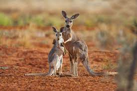

ANIMAL'S INFORMATION

Name:-Asiatic Lion
INFO:-
1] The Asiatic Lion is a lion population of the subspecies
panthera leo leo
2] Sience the turn of the 20th century,its range has been restricted to
Gir National Park and the surrounding areas in the India
state of Gujrat.
3] The first Scientific description of the Asiatic lion was
published in 1826 by the Austrian zoologist Johann N. Meyer
who name it Felis leo persicus .
4] Until the 19th century, it occurred in Saudi Arabia,Eastern Turkey,Iran,
Mesopotamia, from east of the Indus River in Pakistan to the
Bengal region and the Narmada River in Central India.

Name:-Tiger
INFO:-
1] Tigers are the largest wild cats in the world.
2] Tigers are carnivorese,eating only meat.
3] Tigers are solitary hunters,and generally search for food alone at night
4] Tiger are good swimmers!
5] A tiger's can be heard as far as three kilometeres away
6] At full speed,tigers can reach up to 65km/h
7] No two tigers have the same stripes
8] Today ,there are five subspecies of tiger,
I.Bengal tiger
II.South china tiger
III.Indochinese tiger
IV.Sumatran tiger
V. Amrut tiger
Name:-Elephent
INFO:-
1] Elephants are the largest living land animals.
2] Three living species are currently recognised: the African bush elephant (Loxodonta africana),
the African forest elephant (L. cyclotis), and the Asian elephant (Elephas maximus).
3] They are the only surviving members of the family Elephantidae and the order Proboscidea;
extinct relatives include mammoths and mastodons.
4] Distinctive features of elephants include a long proboscis called a trunk,
tusks, large ear flaps, pillar-like legs, and tough but sensitive grey
skin.
5] The trunk is prehensile, bringing food and water to the mouth and grasping objects.

Name:-Leopard
INFO:-
1] The leopard (Panthera pardus) is one of the five extant species in the genus Panthera.
2] It has a pale yellowish to dark golden fur with dark spots grouped in rosettes.
3] Its body is slender and muscular reaching a length of 92–183 cm (36–72 in) with a 66–102 cm (26–40 in)
long tail and a shoulder height of 60–70 cm (24–28 in). Males typically weigh 30.9–72 kg (68–159 lb),
and females 20.5–43 kg (45–95 lb).
4] The leopard was first described in 1758, and several subspecies were proposed in the 19th and 20th
centuries.
5] Today, eight subspecies are recognised in its wide range in Africa and Asia. It initially evolved in
Africa during the Early Pleistocene, before migrating into Eurasia around the Early–Middle Pleistocene
transition.

Name:-Cheetah
INFO:-
1] The cheetah (Acinonyx jubatus) is a large cat and the fastest land animal.
2] It has a tawny to creamy white or pale buff fur that is marked with evenly spaced, solid black spots.
3] The head is small and rounded, with a short snout and black tear-like facial streaks.
4] It reaches 67–94 cm (26–37 in) at the shoulder, and the head-and-body length is between 1.1 and 1.5 m
(3 ft 7 in and 4 ft 11 in). Adults weigh between 21 and 72 kg (46 and 159 lb).
5] The cheetah is capable of running at 93 to 104 km/h (58 to 65 mph); it has evolved specialized
adaptations for speed, including a light build, long thin legs and a long tail.

Name:-Giant Panda
INFO:-
1] The giant panda (Ailuropoda melanoleuca), also known as the panda bear or simply panda,
is a bear species endemic to China. It is characterised by its black-and-white coat and rotund
body.
2] The name "giant panda" is used to distinguish it from the distantly related red panda.
3] Adult individuals average 100 to 115 kg (220 to 254 lb), and are typically 1.2 to 1.9 m (3 ft 11
in to 6
ft
3 in) long.
4] The species is sexually dimorphic, as males are typically 10 to 20% larger. The fur is white,
with black patches around the eyes, ears, legs and shoulders.
5] A thumb is visible on the bear's forepaw, which helps in holding bamboo in place for feeding.
6] Giant pandas have adapted larger molars and expanded temporal fossa to meet their dietary
requirements.

Name:-Rabbit
INFO:-
1] Rabbits are small mammals in the family Leporidae (which also includes the hares), which is in the order
Lagomorpha (which also includes pikas).
2] The European rabbit, Oryctolagus cuniculus is the ancestor of the world's hundreds of breeds of domestic
rabbit.
3] Sylvilagus includes 13 wild rabbit species, among them the seven types of cottontail.
4] The European rabbit, which has been introduced on every continent except Antarctica, is familiar
throughout
the world as a wild prey animal, a domesticated form of livestock and a pet.
5] With its widespread effect on ecologies and cultures, in many areas of the world, the rabbit is a part
of daily life as food, clothing, a companion, and a source of artistic inspiration.

Name:-deer
INFO:-
1] A deer or true deer is a hoofed ruminant ungulate of the family Cervidae.
2] It is divided into subfamilies Cervinae (which includes, among others, muntjac, elk (wapiti),
red deer, and fallow deer) and Capreolinae (which includes, among others reindeer (caribou),
white-tailed deer, roe deer, and moose).
3] Male deer of almost all species (except the water deer), as well as female reindeer, grow and
shed new antlers each year. These antlers are bony extensions of the skull and are often used for combat
between males.
4] The musk deer (Moschidae) of Asia and chevrotains (Tragulidae) of tropical African and Asian forests are
separate families that are also in the ruminant clade Ruminantia; they are not especially closely related to
Cervidae.

Name:-zebra
INFO:-
1] Zebras are African equines with distinctive black-and-white striped coats.
2] There are three living species: Grévy's zebra (Equus grevyi), the plains
zebra (E. quagga), and the mountain zebra (E. zebra).
3] Zebras share the genus Equus with horses and asses,
the three groups being the only living members of the family Equidae. Zebra stripes come in different
patterns, unique to each individual.
4] Several theories have been proposed for the function of these patterns,
with most evidence supporting them as a deterrent for biting flies.
5] Zebras inhabit eastern and southern Africa and can be found in a variety
of habitats such as savannahs, grasslands, woodlands, shrublands, and
mountainous areas.

Name:-kangaroos
INFO:-
1] Kangaroos are marsupials from the family Macropodidae (macropods, meaning "large foot").
2] In common use the term is used to describe the largest species from this family, the red kangaroo,
as well as the antilopine kangaroo, eastern grey kangaroo, and western grey kangaroo.
3] Kangaroos are indigenous to Australia and New Guinea. The Australian government estimates
that 42.8 million kangaroos lived within the commercial harvest areas of Australia in 2019,
down from 53.2 million in 2013.
4] As with the terms "wallaroo" and "wallaby", "kangaroo" refers to a paraphyletic grouping of species.
5] All three terms refer to members of the same taxonomic family, Macropodidae, and are distinguished
according
to size.